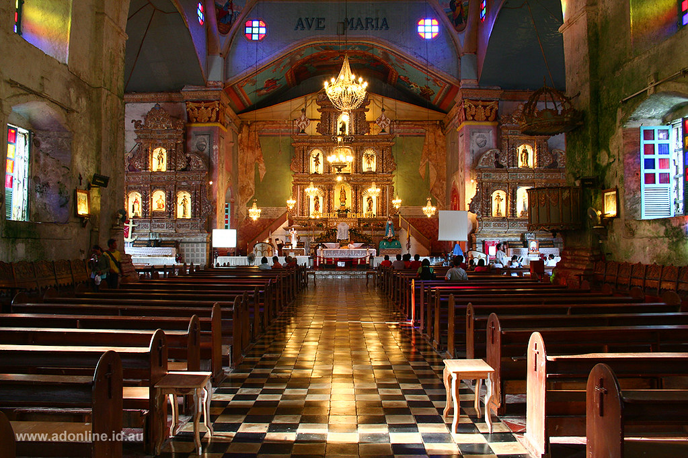

The second-oldest stone church in the Philippines is the Church of Our Lady of the Immaculate Conception in Baclayon. The white of almost a million eggs was used to cement the coral stones that were used to make it. Stone structures that were erected by the Augustinian Recollects in the 19th century surround the church. It has been a popular tourist destination and attraction in Bohol, particularly for Catholics and history buffs. Three retables, one retablo mayor, and two additional side altars make up the elaborately built church altar. The church is a representation of the Boholanos' strong faith and commitment to God.
Origin of Baclayon Church
Baclayon was made a parish in 1717. The current stone church was completed in 1727 and was built by the Jesuits. The Augustinian Recollects took over the administration of the spiritual needs of the people of Baclayon in the latter half of 1768, following the expulsion of the Jesuits from the region. Under the leadership of Father Pedro de la Encarnación, OAR (1839–1854), Father Antonio Úbeda, OAR (1856–1859, 1861–1868), and Father José María Cabañas, OAR (1870–1898), the church underwent renovations. In 1901, the chapel was spared the devastation that American soldiers may have brought in return for food and water. The church sustained damage during World War II but was eventually repaired.
Uniqueness of Baclayon Church
Bohol's Baclayon Church has been designated as a National Historic Landmark and National Cultural Treasure. It is one of the oldest Catholic churches in the Philippines, having been built in 1727 and still using original materials. Just a few decades after Spanish conquistadors arrived, in 1596, Jesuits established the actual parish missionary, which was formally known as La Purisima Concepción de la Virgen Parish. Despite being a major tourist destination, local parishioners still run Baclayon Church. The reception is a little disorganized, but it feels cozy and welcoming to visitors. Visitors enter from the tiny museum, which was once a convent, when there are no mass services. On display are a variety of religious artifacts dating back to the 16th century.